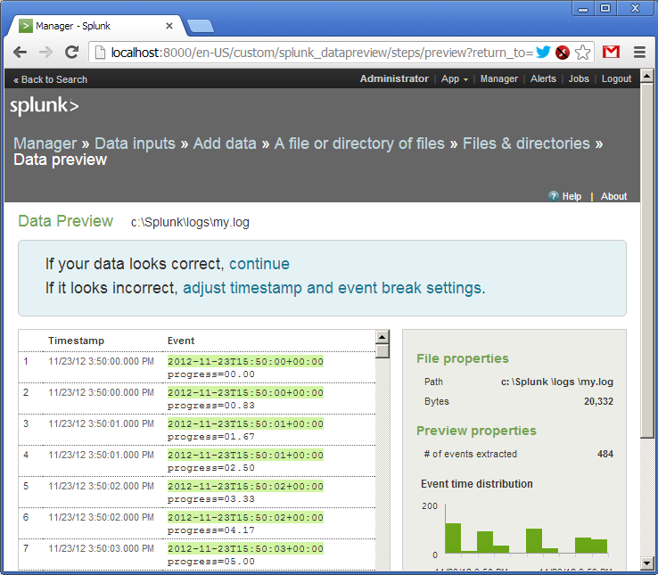
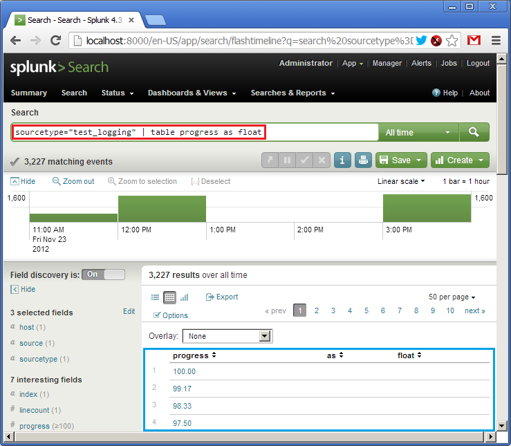
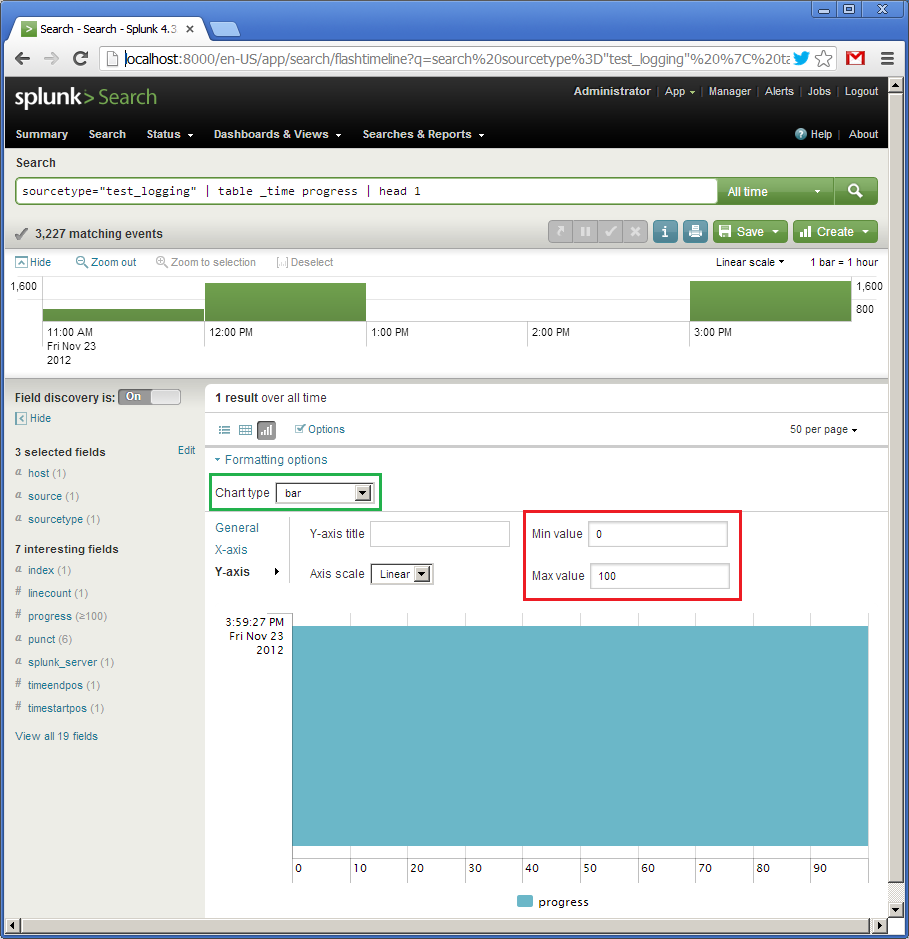

Пример использование Splunk для анализа логов
Splunk - это система хранения и анализа логов. В двух словах принцип работы можно описать так: есть сервер Splunk, который хранит, индексирует и позволяет анализировать логи, и есть рабочие машины (сервера), которые эти логи создают и передают на сервер Splunk. Сервер Splunk в свою очередь может быть кластером из нескольких физических машин, между которыми распределяется хранение информации, и которые используются для ее обработки по технологии MapReduce. Способов передавать логи с рабочих машин очень много: через специальную программу forwarder, которая умеет быстро и эффективно отсылать изменения логов на сервер, через технологии типа NFS/SMB, или SNMP, можно самостоятельно отсылать данные в Splunk по TCP/IP (например, вместо того, чтобы писать в файл). Под Windows Splunk умеет брать данные из Windows Events, Performance Counters или Реестра. Это основные способы.
Для Splunk логи - это текстовая информация, разбитая на строки. В процессе индексирования строки логов разбиваются на поля, например “имя=значение”, хотя это настраиваемо. Далее с помощью специального языка запросов SPL можно работать с этими полями: сортировать, агрегировать, создавать вычисляемые поля, формировать таблицы, обращаться ко внешним словарям, например, из SQL-базы, и, конечно, строить разнообразные графики. SPL работает не только с одиночными строками, но и позволяет группировать, “сжимать” логически в одну строку многострочные куски.
Как заявляет сам Splunk, все логи, что хранятся в системе за любое время, являются доступными для запросов, то есть нет понятия архивирования. Конечно, машин (машины), где крутится Splunk должна сообразно отражать объем хранимой и обрабатываемой информации.
Еще Splunk называет себя “Google для логов”, но оставим это высказывание без комментариев на их собственный откуп.
Интерфейс Splunk - веб. Можно создавать панели (dashboard’ы), из которых формировать свое собственное Splunk-приложение. У Splunk есть магазин приложений (хотя большинство из них бесплатны), где есть море уже готовых конфигураций для анализа популярных систем, например, UNIX syslog, логи Apache, Microsoft Exchange и т.д.
Программный комплекс Splunk можно бесплатно скачать с официального сайта. Лицензирование происходит на основе дневного объема прокачиваемых через систему логов. Для ознакомления есть минимальный бесплатный объем, которого прекрасно хватает для освоения системы.
Для быстрого ознакомления рекомендую книгу Exploring Splunk от создателей этого продукта. Пролистав ее, вы получите неплохое начальное понимание, что можно делать в Splunk, суть языка запросов SPL и т.д.
В данной же статье я хочу показать реальный пример, который можно повторить в течение получаса. Для этого достаточно бесплатно скачать и установить Splunk под вашу операционную систему. Далее можно просто следовать моим инструкциям.
Пример будет необычным. Традиционно, логи используются для анализа исторической информации. Но ничто не мешает извлекать ее по ходу появления и создавать “живые” индикаторы на ее основе. Соглашусь, мой пример немного искусственен, но я хочу показать, как быстро и просто можно “накидывать” данные в Спланк, формализовать их и строить на их основе динамический пользовательский интерфейс
Вот простой скрипт, который в течение минуты будет записывать в лог сообщения, содержащие процентный показатель (от 0 до 100%).
require 'date'
duration = 60*1
update_period = 0.5
i = 0
while i <= duration do
progress = i * 100.0 / duration
msg = "%s progress=%05.2f\n" % [DateTime.now, progress]
puts msg
open("logs/my.log", 'a') { |f| f << msg }
i = i + update_period
sleep update_period
end
Лог будет выглядеть примерно вот так:
2012-11-23T15:58:54+00:00 progress=45.00
2012-11-23T15:58:55+00:00 progress=45.83
2012-11-23T15:58:55+00:00 progress=46.67
2012-11-23T15:58:56+00:00 progress=47.50
2012-11-23T15:58:56+00:00 progress=48.33
2012-11-23T15:58:57+00:00 progress=49.17
2012-11-23T15:58:57+00:00 progress=50.00
Наша цель создать dashboard (панель просмотра) в Спланке, которая отображала бы процесс выполнения скрипта в форме красивого индикатора, беря при этом данные из лога.
Для простоты мы будет все делать на одной машине, и Спланк будет брать лог просто из указанного файла.
Итак, вы уже установили Спланк, и если зайти на “http://localhost:8000”, то вы увидите рабочую страницу Спланка, где можно залогиниться пользователем “admin”.
Далее идем по меню: “Manager -> Data Inputs -> Add data -> A file or directory or files”. Тут мы указывает имя файла или каталога, где лежат наши логи (в данном случае это будет одиночный файл).

Подтверждаем создание так называемого источника логов (source type). Как я уже говорил, логи в Спланк могут поступать различными путями. Каждый такой источник логов именован и может обрабатываться независимо.

Итак, лог добавлен. Мы видим, что Спланк “подцепил” файл и уже разобрал строки на поля. Спланк понимает огромное количество форматов даты и времени, но и это настаиваемо.

Далее мы даем имя нашему источнику логов - “test_logging”, и сохраняем настройки.

Возвращаемся на главную страницу и строке Search вводим наш первый запрос на языке SPL (в красном):
sourcetype="test_logging" | table progress as float
Перевожу: взять логи из источника “test_logging”, сформировать таблицу, в которую добавить колонку со значением из поля “progress”, попутно преобразовав его в тип float. Внизу (в синем) мы видим результат выполнения запроса (в логе уже есть данные). В SPL работает принцип UNIX pipes (|), когда результат одной операции передается на вход следующей.

Итак, таблица есть. Теперь сделаем ей графическое представление. Так как у нас всего одно поле, показывающее процент выполнения от 0 до 100, то, например, можно использовать вид спидометра, стрелка которого будет демонстрировать текущее значение. Кликаем на “Formatting options” (в синем) и выбираем тип элемента (Chart type) “radial gauge” (в красном). Появляется вот такой красивый спидометр.

Первый виджет готов. Теперь ради эксперимента создадим еще один. Он тоже будет показывать значения поля progress, но в виде горизонтального индикатора (progress bar), двигаясь слева направо. Запрос в этом случае будет таким:
sourcetype="test_logging" | table _time progress | head 1
Что значит: по данным из источника “test_logging” создать таблицу из двух полей, “_time” и “progress”, из которой брать только первую строку. Сортировка по умолчанию по полю “_time” по убыванию. Внизу (в зеленом) мы видим результат этого запроса.

Далее кликаем на “Formatting options”, выбираем тип “bar” (в зеленом), для оси Y задаем интервал от 0 до 100. Почему-то тут ось X идет по вертикали (там будет отображаться поле “_time”), а ось Y по горизонтали (там будет отображаться поле “progress”). Так как запрос на предыдущей картинки показывал значение 100, то и наш горизонтальный индикатор полностью закрашен.

Я пропустил это для первого виджета, спидометра, но отлаженный запрос и его визуальное представление можно сохранить в виде “Dashboard panel”. Для это кликаем на “Create” и “Dashboard panel…” (в красном) и сохраняем настройки. Назовем первый наш виджет “Speedometer”, и второй “Progress bar”.

При сохранение первого виджета будет предложено также создать панель (dashboard), назовем ее “Test logging”. При сохранении второго виджета добавим его уже созданную панель.
После создания панели можно кликнуть на “Dashboards & Views”, выбрать ее по имени “Test logging”. Внешний вид будет примерно таким:

Пока данных нет, поэтому панели пустые. Мы видим название панели (в красном), названия виджетов (в желтом), кнопку активации панели (в зеленом) и кнопки “Edit” (в синем), которой можно налету подправить запрос или визуальное представление. Перед запуском скрипта надо через кнопку “Edit” зайти в каждый из виджетов и указать интервал времени обновления в одну секунду: от “rt-1s” (real time - 1s), до “rt” (текущее время).
Итак, все! Зажимаем на “On” и запускаем наш скрипт.
Видео как это работает:
Все!
Заключение
Конечно, пример очень простой, но надеюсь, мне удалось передать хотя бы минимальное ощущение, как работает Спланк.
Скажу, мы в компании недавно начали использовать этот продукт и пока довольны. В этом году я был на конференции SplunkLive, где выступали люди из весьма солидных контор типа British Telecom. С помощью Splunk они обрабатывают гигабайты логов ежедневно.
Увы, даже у крупных контор не всегда есть желание разрабатывать подсистему для обработки логов, так что Спланк может прийтись очень кстати.
Disclaimer